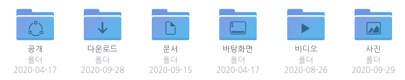
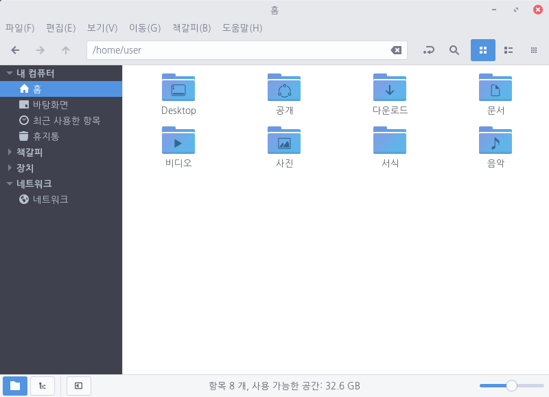
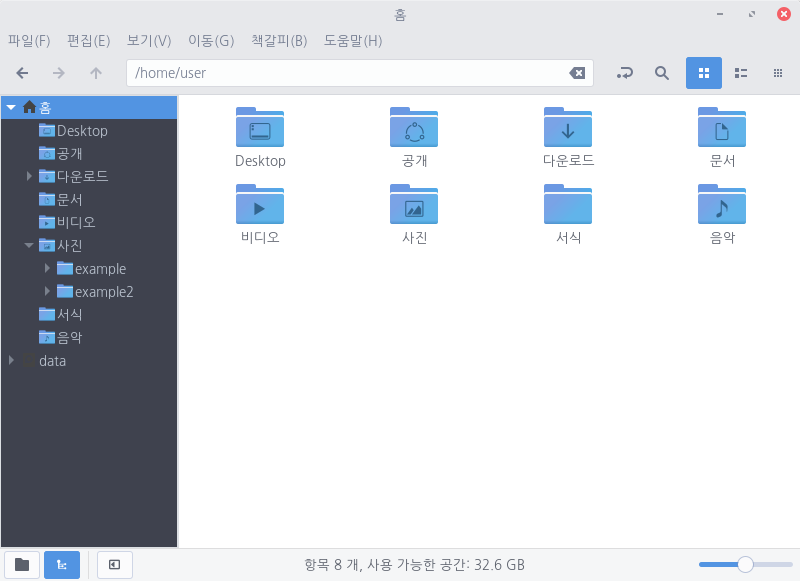
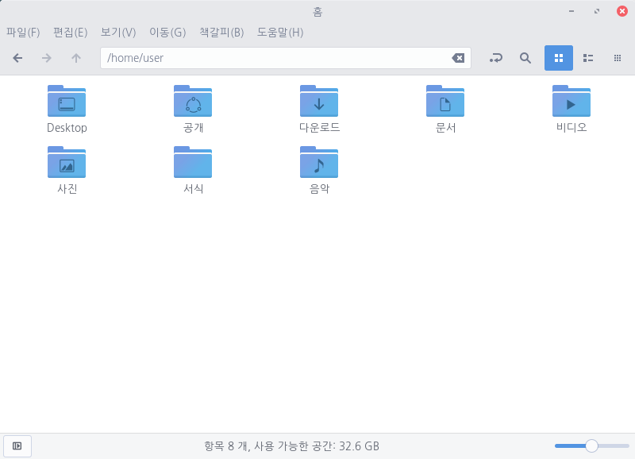

파일에서 아이콘 아래에 캡션이 표시되는 방법을 설정할 수 있습니다. 창 오른쪽 상단에 있는 메뉴 버튼을 클릭하고 [기본 설정]을 선택한 다음 [보기] 탭을 선택합니다.
아이콘 보기를 사용하는 경우 각 아이콘 아래에 파일 및 폴더에 대한 추가 정보를 표시하도록 선택할 수 있습니다. 해당 정보를 표시하도록 설정하면 파일 소유자 또는 마지막 수정 날짜 등을 확인하는 데 도움이 됩니다. 메뉴 표시줄의 [보기(V)]에서 [확대(I)] 또는 [축소(O)]하거나 하단 상태 표시줄 오른쪽에 잇는 슬라이더로 확대/축소 수준을 선택하여 폴더를 확대할 수 있습니다. 확대할 때마다 캡션에 더 많은 정보가 표시됩니다. 캡션에 표시할 항목은 최대 3개까지 선택할 수 있습니다. 아이콘 캡션에 표시되는 정보는 목록 보기에서 제공하는 열 정보와 동일합니다. 자세한 내용은 파일 목록 열 환경 설정을 참조합니다.
위치 보이기 내 컴퓨터, 책갈피, 장치, 네트워크 등 폴더를 위치별로 표시할 수 있습니다. 최근 사용한 항목, 책갈피 기능 등을 사용하거나 볼륨 장치를 쉽게 찾고 싶을 때 유용합니다. 
트리뷰 보기 파일을 목록 보기 형식으로 볼 때 폴더 확장 허용을 사용할 수 있습니다. 파일 목록의 각 디렉터리에 확장기가 표시되므로 여러 폴더의 하위 폴더를 한 번에 볼 수 있습니다. 음악 파일이 아티스트별 폴더 및 앨범별 하위 폴더로 구성된 경우와 같이 폴더 구조가 관련이 있는 경우 유용합니다. 
사이드 바 숨기기 좌측 사이드 바를 숨겨 화면을 간단하게 표시할 수 있습니다. 